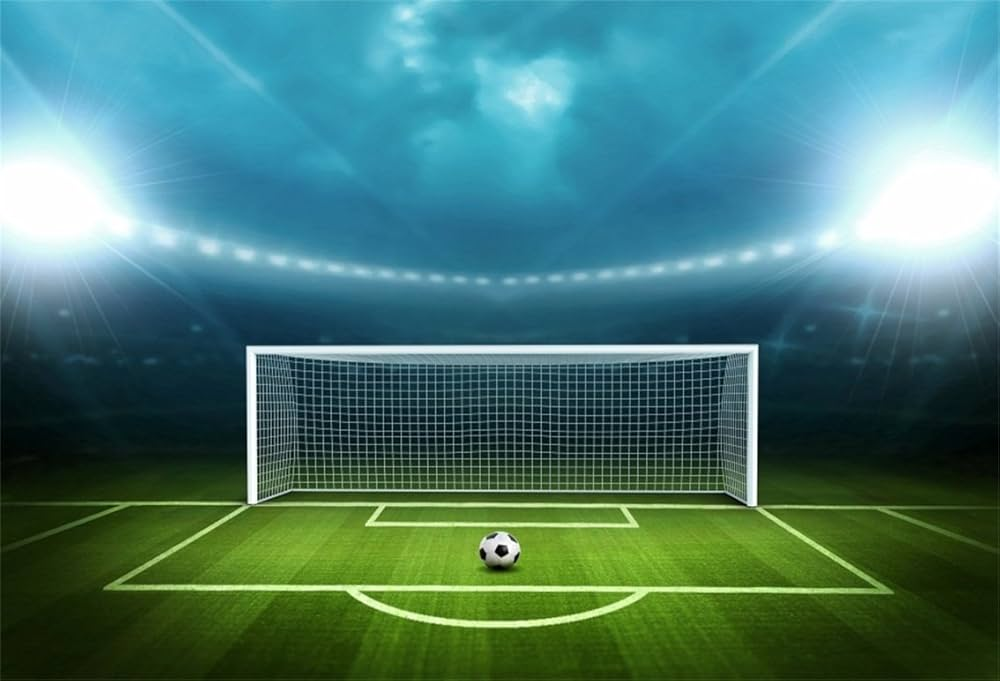
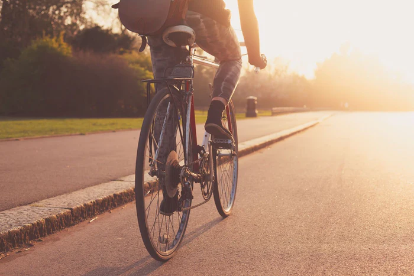

My Favourites:
Basketball

This is one of two of my favourite sports of all time. While I might like something like soccer slightly better, Basketball is a game I can easily pick up, and play with my friends with no hassle. Core points of the sport include:
- Swinging the Ball
- Scoring any way possible
- And working with your team on defense
Try it for yourself, and get some friends as well to pick up for your team. With versions like King Of The Court, 3v3, 5v5, 1v1, etc. you will never get tired. Watch this video for more information!
Soccer: The Beautiful Game
You can't go wrong with a sport that is named with such a subtitle, and yet breaks beyond just one name for itself. Most other places call it Football, but one thing is agreed upon. It's a team sport that's sure to bring good memories to all who play, which is why it will forever be my personal favourite sport. Pillars of the sport include:
- Tons of Cardio,
- Poisitions for players,
- Maintaining Posession
- Overall communicating with your team
This is a sport that simply speaks for itself, 10/10. Watch this video for inspiration!
Biking
To me, almost nothing beats the thrill of riding my bike down the trail, feeling pure adrenaline and excitement. Biking brings joy to me every spring & summer, and riding my bike is like second nature though I only learned recently. Switching gears to accomodate a downhill or uphill is almost poetic, and as long as you're riding with a full bottle of water, you'll never be disappointed.
- Pedal at your own pace
- Shift gears before going uphill or downhill
- Always travel with a water bottle
- Take breaks if you're tired!
Not enough words describe the feeling of biking. Try it for yourself, and watch this video if you're struggling.